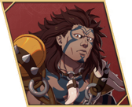

Goliath
- Chinese name
- 哥莱亚斯
- Game8 tier
- A
- Used in
- Path 2: Dietrich
- Personal abilities
- Heavyweight Class, Pin Down
- Boons
- Axe, Heavy Armor
- Banes
- White Magic, Flying, Black Magic
- Likes
- Rampaging, food, animals, smoking meat
Growth rates
| HP | Str | Mag | Spd | Dex | Def | Res | Lck | Cha |
|---|---|---|---|---|---|---|---|---|
| 55 | 60 | 5 | 15 | 30 | 50 | 20 | 35 | 20 |
Gifts they like
- Loved
- Strategy Manuscript, Volcano Ghosh
- Really liked
- Aromatic Shosh, Eastern Tea Leaves, Jade Ghosh, Kitten Figurine, Light Shosh, Mature Ghosh, Mature Shosh, Rustic Ghosh, Secret Ghosh, Southern Ghosh, Sturdy Rucksack, Sun Ghosh, Training Bracelet, Wing Fletching, Young Ghosh
Paired ending
Ultand — romantic ending. Reach A support and watch the conversation. Keep it above Dante, Loretta, who also have an ending with Goliath.
Builds
Path 2: Dietrich (Normal)
- Gladiator Beginner start
ranks: Gauntlet D / Axe D / Sword D - Armored Knight Specialty Lv20
ranks: Heavy Armor E+; Axe C / Spear C - Dreadnought Advanced Lv35
ranks: Heavy Armor D; Axe B / Spear B
- Joins
- S3/R6 + 3 Giants' Meat
- Role
- Wall
- Train
- Heavy Armor to D, Axe to B.
- Gear
- Axes. Pin Down acts as an enemy magnet (CN). CN Dietrich guide: a cursed axe, sea-spirit charm and a large shield.
- Mount etc.
- Giants' Meat: Sand-Shadow Fort always has one; world-map enemies with a giant icon may drop it.
- Level in
- Gladiator: HP 65% · Def 50% · Str 70%
Armored Knight: HP 65% · Def 75% · Str 70%
Dreadnought: HP 70% · Def 80% · Str 75% - Master here
- Armored Knight → Great Counter (Atk +3 when the foe attacks first); Dreadnought → Focused Counter (Hit +10 when the foe attacks first)
- Farm only
- Bardinger → Aegis (20%: halve magic damage)
- Equip order
- Heavyweight Class → Pin Down → Great Counter → Focused Counter → Aegis → Axe or Spear Lv. 3 at B+ (Hit/Avo +5) → Pavise and Aegis stack with Buccar's Guardian's Duty (Game8)
- Why
- Game8's line.